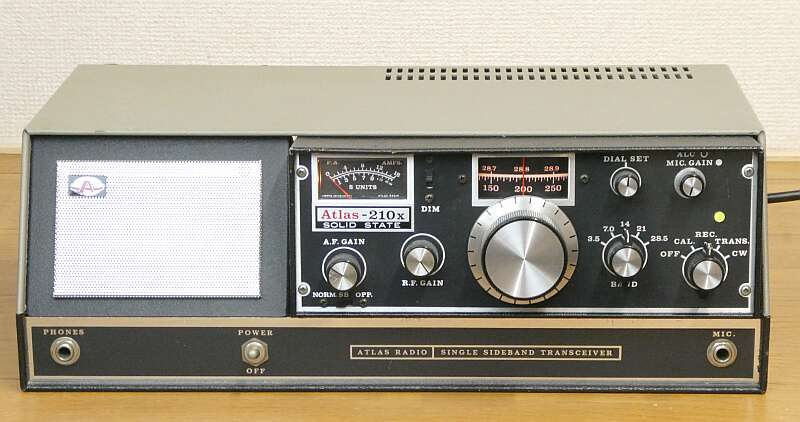
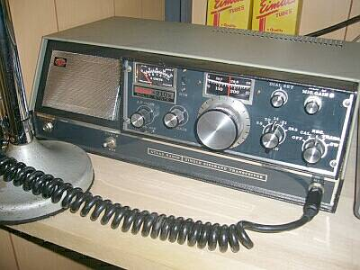
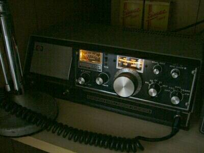

X-Lock組み入れ後の現状 右端の「緑LED」がそのLock表示です（改造 記事は こちら） |

ここでの写真は、オリジナルの状態
|
１９７５年頃だったと思います、US ＡＴＬＡＳ社の製品
ＡＴＬＡＳは、ＳＷＡＮの創業者が作った会社
本機は、オールソリッドステートの移動目的に設計されたもの（１００W：オーナーの趣味、船用かも！？）
写真のようにコンソール（電源・スピーカー内蔵）に納めると固定機風になります（本体は、簡単に引き抜くことが出来ます）
基本構成はＳＷＡＮ同様、５ＭＨｚ帯IFに、バンドごとに発信周波数の異なるＶＦＯを組み合わせたシングル・コンバージョンで５バンド（３．５～２８MHｚ）
国産では、八重洲無線 ＦＬ－５０（Ｂ）、ＦＴ－５０が似たような周波数構成を採用していました
本機の大きな特徴は、受信のトップがＤＢＭ すなわちＴＯＰミキサー（ＲＦ増幅なし）です |
Ａｔｌａｓ ２１０ｘ
感度Ｕｐ ＶＦＯ安定度Ｕｐ など
現状 → 改造 記事は こちら
改造の結果、２ｎｄマシンとして必要十分な性能が
得られメインマシンの隣にお引っ越ししました(2012.04) |
|

兄弟分に、
Ａｔｌａｓ－２１５ｘ（１．８～２１ＭＨｚ）も |
このアナログチックな照明が良いでしょう
コンソールへの接続も、極めてアマチュアライク、言い方を変えれば良く工夫してあります
メイン・ダイヤルは、糸かけです
それでも一回転３０ＫＨｚ程度に減速された格好になっています
電源・結合コンデンサ・時定数など、必要な変更というか修理・改造を行いました（改造についてはこちらでご紹介）
ＶＦＯ・・・当然動きますが、そのドリフトがバンドによって少し気になるくらい（解決済み！→ 詳細はこちら）で、あとは実用に問題ありません |
時代背景でしょうか、これら特徴的な（手の入れ甲斐がある？）無線機については特に、いろんな改造記事が出回り、そして３ｒｄパーティからは付加オプションの販売が行われるなど、極めてアマチュアライクな楽しみ方が出来ました（最近では無い楽しみ方が出来た時代でもありました／古き良き時代！）
デジタルＤｉｓｐｌｙに、ＶＦＯ-Ｌｏｃｋ・・・今でもＷｅｂ検索で一杯出てきます |
| 資料提供：JA4FUQ |